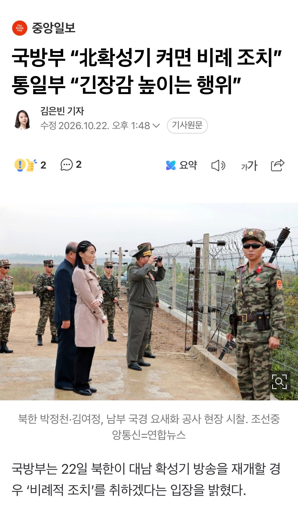
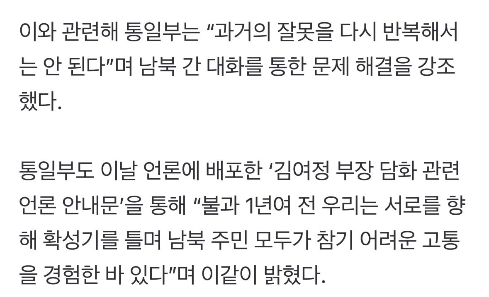

팥죽송 24시간 송출해야한다
팥죽팥죽팥죽팥죽
머쉬룸 머쉬룸
수상한 놈이 하나 있네
확성기는 비례조치
지뢰는 고의성 여부 확인 ㅈㄴ하다가 사과하세요 나한테
순서가 좀 이상하지않냐? 지뢰는 북한이 선빵쳤는데 지들이 확성기를 하고 우리는 그거에 맞춘 비례조치를 하는거임? 비례조치는 뭐가 있는거임? 그 옵션이 있다면 지뢰도발을 했을때 했어야하는거 아니야?
부처마다 할일 하는구만 뭘
부처마다 할 일 하는게 아니라 싸패인거지
부처들은 이렇게 할일들 하는데
예수들은 뭐하는지.. 쯧
존나 나이브해 하여간
통일은 꼭 온건한 방식으로만 할필욘없잖아? 말을쳐안들으면 쓴소리할줄도알아야지?
지뢰로 우리 군바리 다리 날렸는데
비례조치면 우리도 정은 다리 한짝 받아야지
저쪽으로 확성기 틀때 빅뱅 뱅뱅뱅 존나 나왔음 ㅋㅋㅋㅋㅋㅋㅋ
확성기 틀면 가요 틀어주는거야?
같이 틀지 말고 포 쏴서 박살내라고
통일부는 어느 나라 소속인지 가끔 의아할 때가 있다 ㅆㅂ 긴장 높이는 게 누군데...
같은 민족의 통일을 위한 의견제시 및 업무가 통일부의 존재 이유인데 의견 통일 안된다고 뭐라하는게 맞아?
각자 자기위치에서 열심히 일하는걸 너무 몰아가는데
k9 조준사격
쇼하지말고 양쪽 확성기 주석궁이랑 청와대에 박아라ㅋㅋ
제 부처 할일 잘 하고 있는 것 같은데
어느 부처에 방향타를 줄건지는 위에서 결단해야 할 문제인거고